01 / 改期
改一个时间，要动三个地方
日历、提醒、相关待办各改一遍；漏一个，第二天就迟到。
说一句。能一起改的，就不让你改第二遍。
会改期、待办会变、项目会推进、计划会撞车。UCalendar 把日程、待办、项目和桌面组件放在同一张桌面上；说一句“改到下午三点”，AI 秘书直接改，改完还能撤回。
Lite 也有 AI 秘书、黄历吉日和桌面便签；Pro 多了项目管理、便签管理、日迹、时间册导出、今日节奏、微信机器人、6 个桌面组件、22 套高级主题和工作区。先看它怎么改 ↓
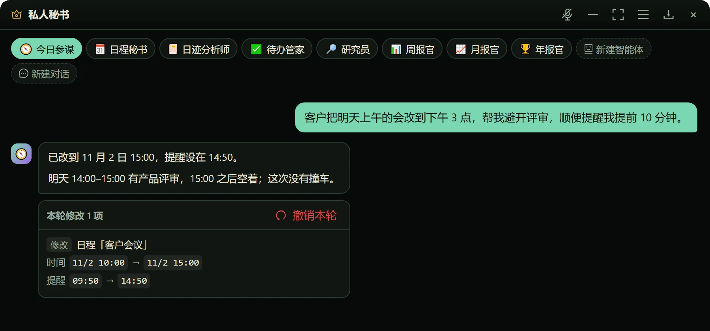
大多数日历假设你会按计划走。现实是客户改时间、会议超时、临时插进来一件事。UCalendar 先解决“改”的那一下。
日历、提醒、相关待办各改一遍；漏一个，第二天就迟到。
主面板改了，小组件还停在旧时间；越看越不敢信。
原来的时间、提醒、地点，靠记忆拼不回来。
不用打开表单，不用逐项填。你只需要把变化说清楚，剩下的交给它。
“客户把明天上午的会改到下午 3 点，避开评审，提前 10 分钟提醒。”
口语就行。时间、对象、冲突、提醒，一起说。
“已改到 11 月 2 日 15:00。明天 14:00–15:00 有产品评审，15:00 之后空着。”
先看冲突，再动日程。改了什么，列给你看。
“本轮修改 1 项 · 撤销本轮”
改时间、改提醒都留底；撤销回到修改前。
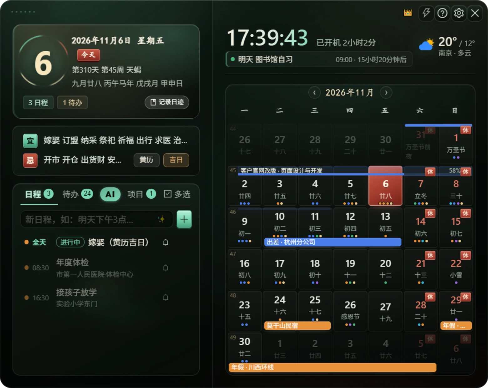
2.8.0 新增项目进度、股票行情、音乐播放三个 Pro 组件，并把收起改为胶囊栏；桌面组件共 12 个。
设置新增主题外观画廊，按编号 01–28 一屏看全；支持切换字体与字号。「智核」主面板顶部为翻页时钟。
扫码绑定微信，私聊即可查询 / 增改日程、待办、便签，发图片可交 AI 识别；支持 /pair /today /weather /almanac /news /support 等指令。
修复数据库繁忙时偶发写入失败的问题；优化日程、待办、便签、项目、回收站和 ICS 导入等写入路径。
完整月历 / 周视图 / 焦点视图；组件拖动吸附，Pro 磨砂、字体、字号、颜色可一次应用到全部。
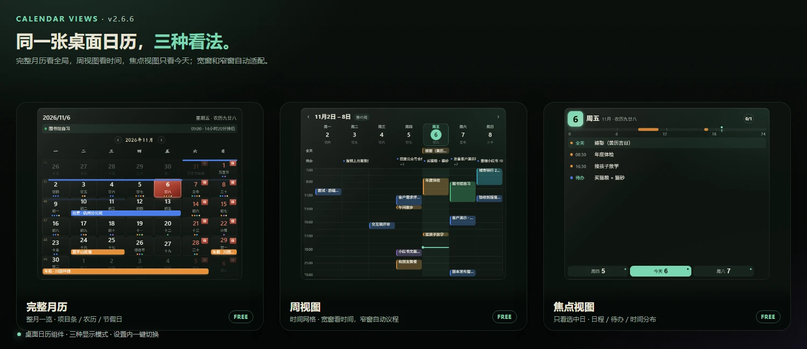
完整更新记录在 GitHub Releases ↗。
不是十二个静态展示卡。它们读同一份日程和待办；你在主面板改，桌面上的组件也跟着变。
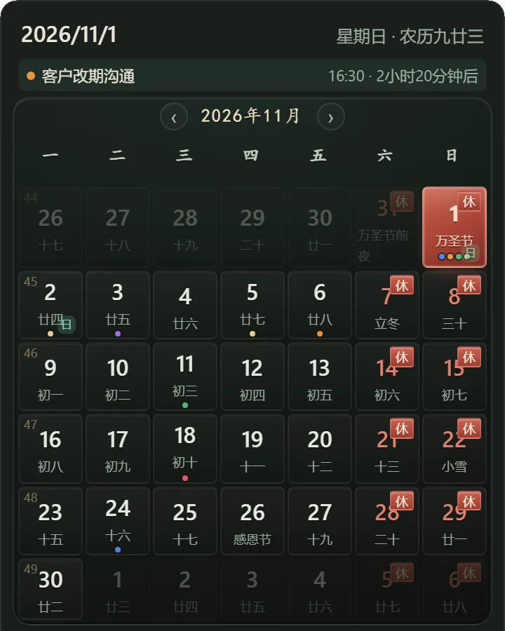
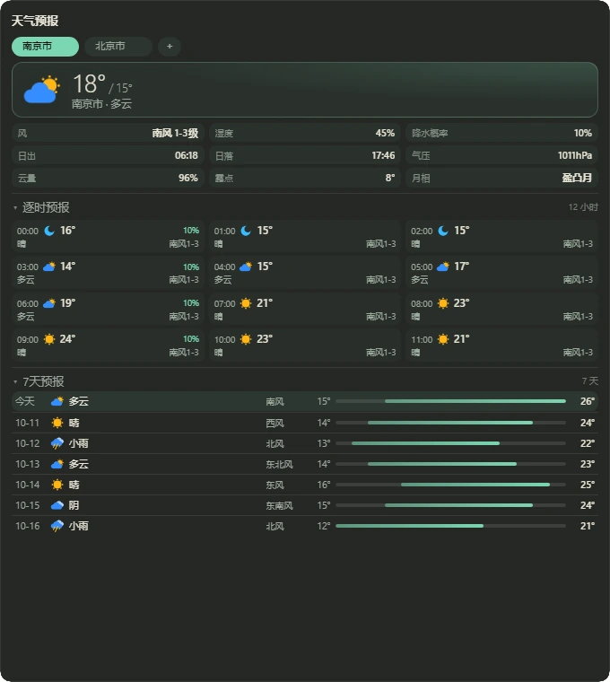
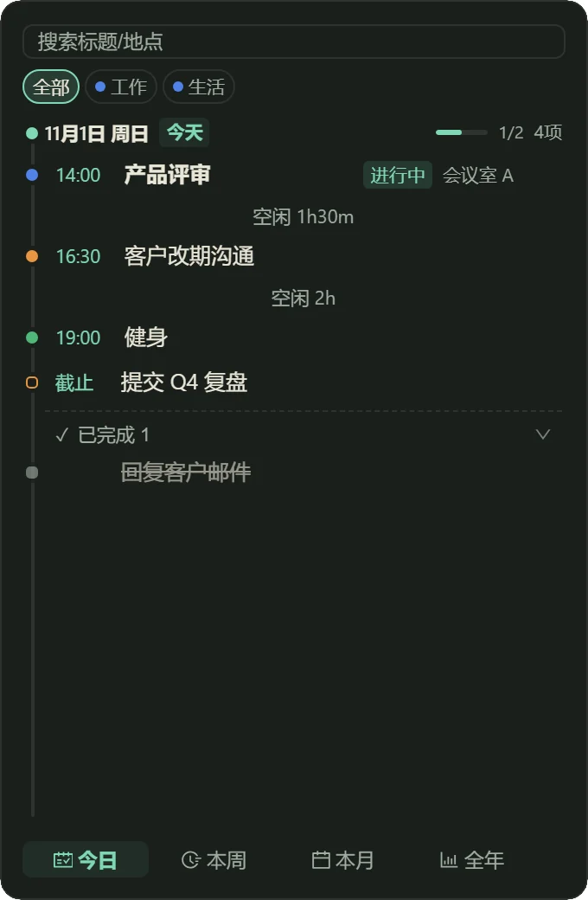
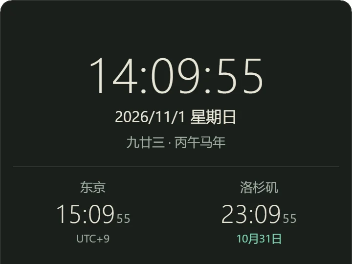
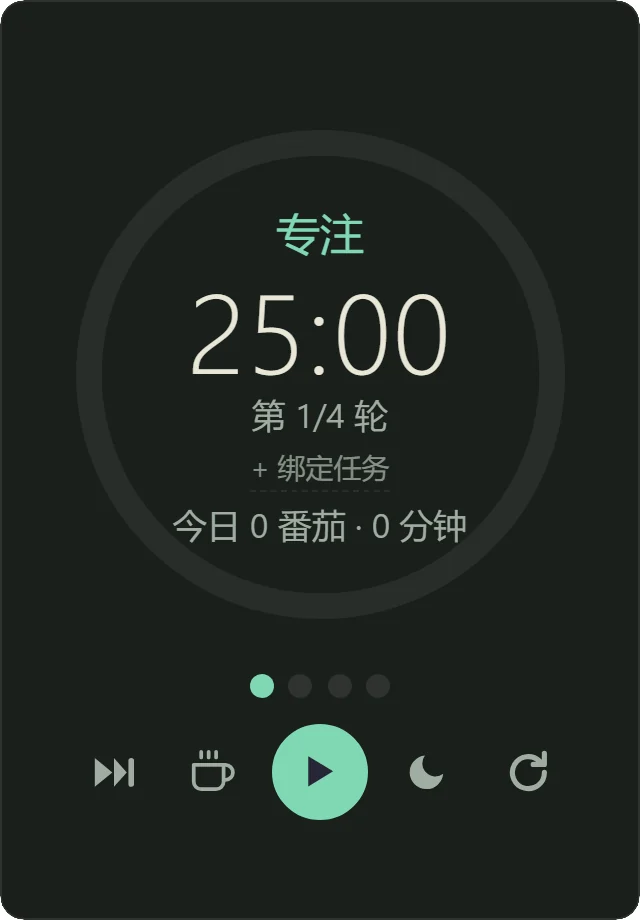
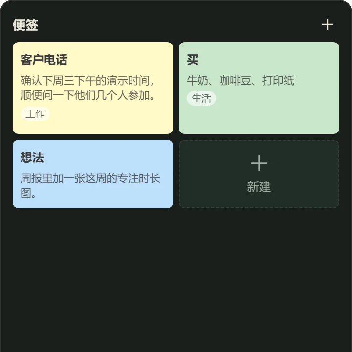
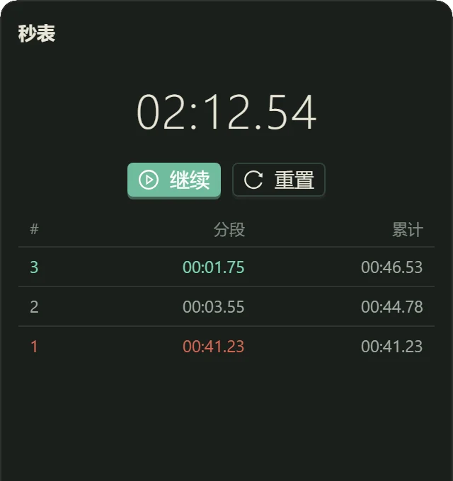
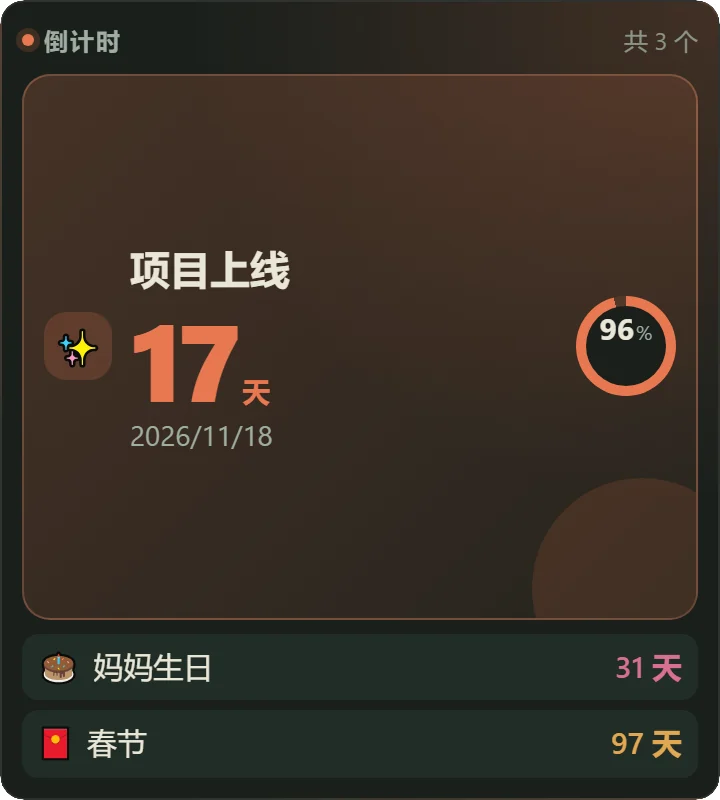
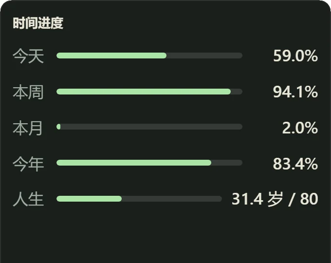
鼠标移入自动滚动 · 手机左右滑动 · 共 12 个。组件不是钉死的，支持拖拽、缩放、透明度、置顶和鼠标穿透；位置会记住。Lite 有 6 个，Pro 有 6 个。
工具值得信任，不是因为说得好听，是因为边界写得明白。
AI 只改你确认的日程和待办；删除、覆盖、写文件都要二次确认。它不会背着你联系任何人。
数据默认存在本机 SQLite。没有账号，也没有“同步失败”；换电脑时自己带走 data 目录。
没有信息流、没有开屏，也不会把日程拿去做推荐。AI 只把对话发给你自己配置的模型服务商。
Pro 是 20 元起自愿支持码，一次支持，长期可用；不是按月扣费。Lite 现有功能长期免费。
两个版本都有 AI 秘书、日程、待办、黄历吉日和本地数据。Pro 多了项目管理、便签管理、日迹、时间册导出、今日节奏、微信机器人，以及更多组件、主题和工作区；AI 另含日迹分析师。
先把日程、待办和桌面组件管好；项目管理、便签管理和日迹时间册留给 Pro。
无广告 · 不登录 · 数据在本机
把项目、便签和每天的时间都收进来。
20 元起自愿支持 · 不是订阅 · 一次支持长期可用
| 对比项 | LITE | PRO |
|---|---|---|
| 项目管理 / 阶段进度 | — | 有 |
| 便签管理页 | —（桌面便签免费） | 有 |
| 黄历 / 吉日查询 | 有 | 有 |
| 日迹 + AI 复盘 | — | 有 |
| 时间册导出 | — | 单日 / 范围 |
| 今日节奏 | — | 有 |
| AI 秘书 | 有 | 有 + 日迹分析师 |
| 桌面组件 | 6 个 | 9 个 |
| 主题 | 6 套 | 28 套 |
| 工作区预设 | — | 有 |
| 后续新增功能 | 现有功能长期可用 | 优先获得 |
| 价格 | 免费 | 20 元起自愿支持 |
Pro 版下载后就是全功能，14 天内不打扰。Lite 永久免费，不需要试用。
Windows 10 / 11；缺 WebView2 首次启动会自动安装。Pro 与 Lite 均使用 CN=UCalendar Studio 代码签名，SmartScreen 首次仍可能提示，可从 Releases 核对文件大小。
下载 exe，双击运行。不用安装，不写系统目录。
数据默认在 %LOCALAPPDATA%\UCalendar。exe 同目录放 data\ 时使用便携目录。
AI 需要填自己的 API Key。不填也能用日程、待办和桌面组件。
只要核心日程、月历、天气、番茄钟、倒计时和桌面便签，选 Lite，永久免费。想要项目管理、便签管理、日迹、时间册导出、今日节奏、微信机器人、世界时钟、秒表、时间进度、工作区预设和全部 28 套主题，选 Pro。两个版本都带黄历 / 吉日，数据互通。
有。Lite 和 Pro 都有 AI 秘书，基础对话、改日程、检查点、研究员、技能和记忆都能用；AI 不是 Pro 专属。Pro 版另含日迹分析师，可复盘日迹与日程。
Lite v2.8.0 没有日迹、时间册导出和今日节奏，也没有项目管理、便签管理页和微信机器人；这些在 Pro 版里。Lite 仍保留日程、待办、月历、黄历吉日、6 个桌面组件、6 套主题和 AI 秘书。
日程、待办、便签和设置默认存在本机 SQLite。只有使用 AI 时，对话才会发给你自己配置的模型服务商；没有账号系统，也没有云端同步。
不是。Pro 是 20 元起自愿支持码，一次支持，长期可用；一人一码。14 天试用到期后，日程、待办、AI、日迹和时间册仍可用；项目管理、便签管理、微信机器人、Pro 组件、今日节奏、工作区和高级主题需要支持码。
源码可以构建，但目前只提供 Windows 官方版本。macOS 没有官方安装包，也不承诺体验一致。